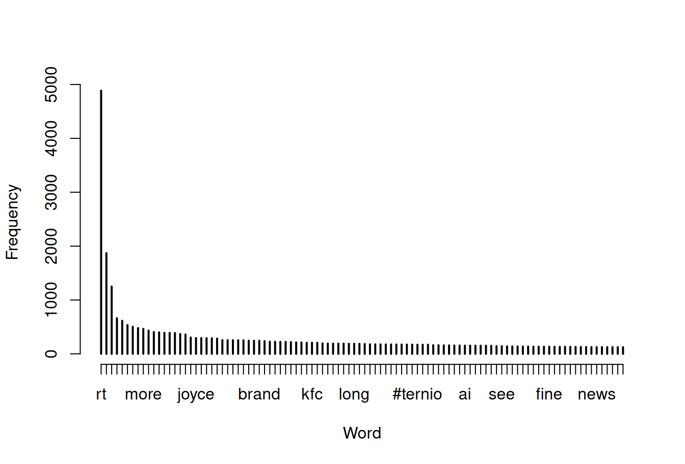

consumer_key <- "XXXXX"
consumer_secret <- "XXXXX"
access_token <- "XXXXX"
access_secret <- "XXXXX"25. Web scraping
1 Twitter client
Researchers interested in social networks often scrape data from sites such as Twitter in order to obtain data. This is relatively easy to do in R, using a package like twitteR, which provides an interface with the Twitter web API.
1.1 Setting up twitteR
It’s fairly easy to get set up (e.g. this post):
- Install the
twitteRpackage - Get a twitter account
- I have @lsrbook for this
- you do need to add a mobile number (for Australian numbers, drop the leading 0)
- Go to https://apps.twitter.com (sign in with your account)
- Click on “create new app”
- Enter the information it requests: you need a name, a description, a website. For my client I set
- lsr-book-twitter-app
- R twitter client for teaching purposes
- I used https://learningstatisticswithr.com (the post suggests: https://bigcomputing.blogspot.com)
- Agree to terms and conditions
At this point the app is created on the Twitter side. You’ll need to get some information to allow R access to the app:
- Click on “key & access token” tab and get the following:
- Consumer Key (API Key)
- Consumer Secret (API Secret)
- Go to the “create my access token” button:
- Access Token
- Access Token Secret
This is all R needs so go back to R and enter the following:
where the "XXXXX" values are of course the keys you just downloaded. Within R the command to authorise the twitteR package access to the app is:
setup_twitter_oauth(consumer_key, consumer_secret, access_token, access_secret)Now we’re ready to go!
1.2 Using the Twitter client
Okay, so I guess people like to tweet about #thedrum so I decided to search for the last 10000 tweets containing that term. It’s easy to do:
library(twitteR)
drumtweet10k <- searchTwitter(
searchString = "thedrum",
n=10000
)The raw data are saved in the dt10k.Rdata. The format of the data is a little complicated, so I did a tiny bit of text processing and tidying, and then saved the results to dt10k-sml.Rdata. Let’s take a look:
load("./data/dt10k-sml.Rdata")
library(lsr)
who() -- Name -- -- Class -- -- Size --
dt10k_stp character 116860
dt10k_txt character 10000
freq table 16529
stopchars character 25
stopwords character 120 In the full data set the twitter client has downloaded a lot of information about each tweet, but in this simpler versionm dt10k_txt variable contains only the raw text of each tweet. Here’s the first few tweets:
dt10k_txt[1:5][1] "RT @deniseshrivell: Joyce and the nationals deserve to be called out & held to account on their complete lack of policy in the public inter…"
[2] "Omnicom promotes Mark Halliday to CEO of perfomance and announces departure of Lee Smith https://t.co/ePom6lnAeX"
[3] "10 questions with… Sarah Ronald, founding director of Nile https://t.co/ZZQlPMe6fr"
[4] "Reeha Alder Shah, managing partner for AnalogFolk: BAME professionals should 'embrace their differences' https://t.co/QXKGMqnGvI"
[5] "Xiaomi and Microsoft sign deal to collaborate on AI, cloud and hardware https://t.co/vkelwHc3a2" The dt10k_stp vector concatenates all the tweets, splits them so that each word is a separate element, after removing punctuation characters, converting everthing to lower case, and removing certain stopwords that are very high frequency but rarely interesting:
dt10k_stp[1:50] [1] "rt" "@deniseshrivell" "joyce"
[4] "nationals" "deserve" "called"
[7] "out" "held" "account"
[10] "complete" "lack" "policy"
[13] "public" "inter" "omnicom"
[16] "promotes" "mark" "halliday"
[19] "ceo" "perfomance" "announces"
[22] "departure" "lee" "smith"
[25] "httpstcoepom6lnaex" "10" "questions"
[28] "sarah" "ronald" "founding"
[31] "director" "nile" "httpstcozzqlpme6fr"
[34] "reeha" "alder" "shah"
[37] "managing" "partner" "analogfolk"
[40] "bame" "professionals" "embrace"
[43] "differences" "httpstcoqxkgmqngvi" "xiaomi"
[46] "microsoft" "sign" "deal"
[49] "collaborate" "ai" The freq variable is a frequency table for the words in dt10k_stp, sorted in order of decreasing frequency. Here are the top 20 words:
names(freq[1:20]) [1] "rt" "@thedrum" "#thedrum" "via"
[5] "@abcthedrum" "@stopadanicairns" "new" "#auspol"
[9] "more" "people" "advertising" "barnaby"
[13] "#qldpol" "marketing" "ad" "up"
[17] "out" "dont" "joyce" "time" Just to illustrate that there is psychological value in this approach, here’s the standard “rank-frequency plot”, showing the signature (approximately) power-law behaviour. There are a few extremely common words, and then a very long tail of low frequency words. Variations on this pattern are ubiquitous in natural language:
plot(
x = freq[1:100],
xlab="Word",
ylab="Frequency"
)
That said, I do wonder how much of this data set is spam. There seem to be a lot of tweets about blockchain in there, which does make me suspicious. I may have to revisit this example in the future!